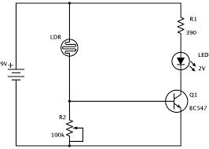

A night light works if it lights up when the surrondings are dark.
We used breadboards and electronics components to build circuits that fufiled this task. A picture, sample circuit diagram , and description can be found below!!!
The battery sends 6v to the LED and the photoresistor, the photoresistor determines how much current goes to the base by it's light input and thus the ground of the battery.
